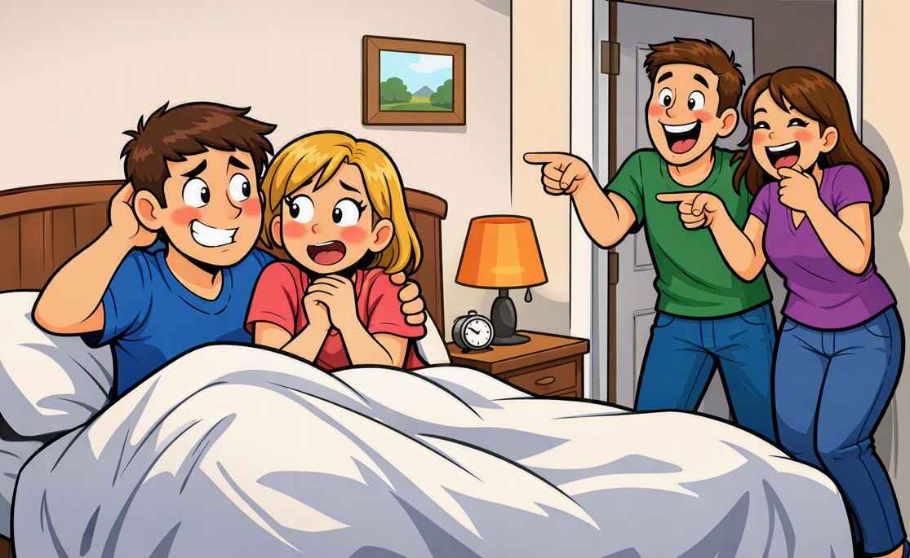

I’m not talking about a few chuckles from a sitcom with commercial interruptions. I mean real, sustained laughter — the kind people keep returning to, revisiting from different angles, and “chewing on” for days or weeks. The kind that becomes a shared reference point, a running thread, a signal of genuine connection.
I’m not disparaging sex. Sex is enjoyable — but laughter is much better, and what follows is an explanation of why.
Both laughter and an orgasm share a structural similarity: they are spontaneous outbursts of pleasure. Each is a sudden release of built‑up tension. But they arise from different systems. Laughter is cognitive and social; sex is biological and private. This distinction matters.
You can go out with your friends in the evening and spend the whole night laughing together. The next morning, when your spouse asks what you did, you can say, “We laughed and laughed and laughed,” and your spouse will be glad you enjoyed yourselves.
If you described private intimate behavior with your friends instead, the reaction would be very different. Laughter strengthens social bonds; sex does not function that way.
Sex, when misused or taken outside its proper boundaries, destroys relationships and social bonds. It creates jealousy, insecurity, conflict, and division. Laughter does the opposite: it builds trust, unity, and shared joy.
You can laugh in a grocery store with your spouse and children. You can pause while selecting items, resume laughing down the aisle, pause again at the checkout counter, and pick up the same thread of humor on the ride home.
Sex is different. It is private and should remain private. It cannot be paused, mixed with errands, or resumed in public. Laughter integrates seamlessly into daily life; sex does not.
You don’t have to seclude yourself in a separate place to laugh. Laughter fits anywhere — in public, in private, in ordinary daily life. It requires no special environment, no preparation, and no physical vulnerability.
Sex requires privacy, boundaries, and an appropriate setting. Laughter is effortless and socially safe.
You can laugh with your children, and you can laugh with other people’s children. Laughter is universally appropriate and strengthens bonds across generations.
Sex is strictly adult and cannot cross generational lines. Laughter is inclusive; sex is exclusive.
When people find a topic that is genuinely funny, they can laugh about it from different angles for weeks. The same moment can be revisited, reinterpreted, and enjoyed again and again. Laughter continues producing joy long after the original moment has passed.
Sex is usually limited to a short duration and does not replay in ordinary life the way humor does. Laughter can be returned to endlessly without diminishing its effect.
You can laugh with your male friends, your female friends, individually or as a group. Laughter works in every social configuration. It strengthens friendships and builds trust without crossing boundaries.
Sex is exclusive, private, and limited to a committed adult relationship. Laughter is socially flexible; sex is socially restricted.
Laughter is social, portable, repeatable, sustainable, and universally appropriate. It strengthens relationships effortlessly. You can laugh with friends, family, coworkers, strangers, children, and entire groups. It requires no privacy, no preparation, and no special conditions.
Sex is private, bounded, and limited to a committed adult relationship. When misused, it damages relationships, breaks trust, and destabilizes social bonds. Laughter never does.
I included this page for a simple reason: to explain why laughter sits higher in the hierarchy of human experience than sex. Where I come from, we don’t have sex. We don’t even have genitals. We laugh — much. And as for sex, we have something better. I won’t go into details because it is personal, but suffice it to say that it is closer to making love to your companion’s soul, and it is phenomenal.
This page is not meant to diminish sex. It is meant to elevate laughter. Laughter is universal, portable, repeatable, sustainable, and socially safe. It is the joy that can be shared with anyone, anywhere, at any time.